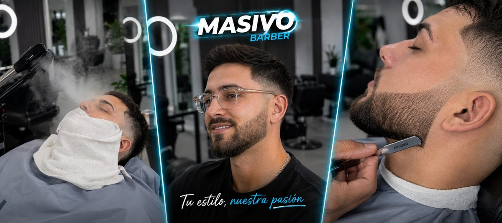

El paso a paso de la mañana siguiente
Salir de la barbería con el corte perfecto es fácil. Que te salga igual en tu casa es otra historia. Hacelo así.
Lavalo, si toca
No hace falta todos los días. Si no sudaste ni te pusiste mucho producto, alcanza con mojarlo. Cuando lo lavás: agua tibia, shampoo solo en el cuero cabelludo y masajeá con las yemas, sin uñas.
Enjuagá bien
Que no te quede shampoo. Si querés, cerrá con un chorro de agua fría: el pelo queda con más brillo.
Secalo con toalla, sin frotar
Apretalo y sacudí el agua. Frotar rompe la fibra y te lo esponja.
Secador, en la dirección correcta
Calor medio, a unos 15 cm. Secalo para el lado en que quiere ir el pelo. Cuando está al 80% seco ya lo podés peinar. Cerrá con 10 segundos de aire frío para fijar la forma.
Producto y a la calle
Una cantidad del tamaño de una arveja. Entibiala entre las palmas, repartila y acomodá según el estilo que quieras (lo ves en la próxima sección).
Ojo con esto
- No te frotes con la toalla ni uses agua hirviendo.
- No te pongas cera con el pelo chorreando.
- No te acuestes con producto puesto.
- Si te levantaste con el pelo parado, mojá solo esa parte. No hace falta la cabeza entera.
Cómo peinarte según cómo lo quieras
Un tip concreto para cada estilo. Tocá el tuyo.
Flequillo para adelante
Secalo con el flequillo cayendo hacia adelante y el aire desde arriba, así no se te levanta. Una arveja de cera en la punta de los dedos, solo para separar mechones. No lo aplastes.
Flequillo para el costado
Primero secalo un ratito para el lado contrario: levantás la raíz y le das volumen. Después lo llevás al costado con los dedos o con peine. Con la cera justa para que se mueva sin desarmarse.
Todo para atrás
Peinalo hacia atrás mientras lo secás, con peine o con los dedos, para marcarle el camino. Con el pelo al 80%, ponete el producto: arrancá por atrás y terminá adelante, así no se te junta todo en el frente.
Con texturizado
Con el pelo húmedo, un poco de salt spray a 20 cm y secalo moviéndolo con los dedos. Ya seco, polvo en la raíz y marcá con las manos. Si querés más control, un toque de cera mate arriba.
Flequillo levantado
Secalo desde la raíz empujándolo hacia arriba con los dedos, con el aire desde abajo. Cerrá con aire frío para que quede. El polvo en la raíz hace que aguante todo el día.
Librito
Pelo húmedo y peine fino. Marcá la raya siguiendo la que te dejó el barbero y secalo peinándolo con calor medio. Natural con flex mate; si tenés que aguantar todo el día, fijación extrema.
No me peino, lo uso despeinado
Despeinado no es dejarlo como te levantaste. Pelo húmedo, salt spray y secalo con las manos moviéndolo para todos lados. Listo, sin peine.
Los productos de Masivo
- SALT SPRAY Textura y volumen natural. Ideal para el look despeinado.
- CERA MATE Fijación suave y acabado sin brillo.
- CERA FLEX MATE Fijación flexible: se mueve pero no se cae.
- CERA FIJACIÓN EXTREMA La más fuerte. Para peinados que tienen que aguantar.
- POLVO TEXTURIZADOR Volumen y agarre en la raíz.
¿No sabés cuál va con tu pelo? Preguntale a tu barbero.
Errores que estás cometiendo
Los hacen casi todos. Fijate cuáles te suenan y cómo se arreglan.
✕Te pasás con el producto
✓Arrancá con una arveja. Si falta, agregás. Sacar es imposible.
✕Ponés cera con el pelo chorreando
✓Secalo al 80% primero. Con el pelo muy mojado la cera no agarra.
✕Te frotás con la toalla
✓Apretá y sacudí. Frotar te lo esponja.
✕Te lavás con agua muy caliente
✓Tibia, y fría al final. Y no hace falta lavarlo todos los días: cada 2 días si no sudás mucho.
✕Peleás contra el remolino
✓Secalo primero en el sentido en que crece y recién después lo acomodás.
✕Te dormís con cera
✓Lavate antes de dormir. Si no podés, mojalo y peinalo.
✕Lo dejás secar solo y después te peinás
✓Peinalo mientras se seca. Seco ya tiene su forma y cuesta cambiarla.
✕Usás el mismo producto para todo
✓Mate para natural, polvo para volumen, fijación extrema para lo que tiene que aguantar.
El error más caro
Esperar a que el corte se vea mal para sacar turno. Cuando se nota, ya pasó de largo.
Cada cuántos días volver
El máximo que recomendamos es 30 días. Según tu corte y tu laburo, conviene antes.
| Rapado, buzz o skin fade | 10 a 15 días |
| Fade o degradé con tope corto | 15 a 20 días |
| Medio largo con laterales cortos (pompadour, quiff, crop) | 20 a 25 días |
| Largo, medio largo o rulos | 25 a 30 días |
Según tu laburo
Atención al público u oficina
Te ven todo el día. Corto, cada 15 días, y no pases de 3 semanas.
Uniforme o reglamento
Si te piden prolijidad, cada 10 a 15 días.
Obra, casco o gorra
El casco te aplasta y te transpira el pelo. Corto y cada 15 a 20 días.
Deporte o gimnasio
Sudás, lavás más y el degradé se ensucia. Cada 10 a 15 días.
Facultad o home office
Podés estirar hasta los 30. Más no.
Si salís en cámara
Redes o streaming: cada 10 a 15 días.
Si ya pasaron los 30 días
- Se te perdió el degradé: pedí corte completo, no un retoque.
- Lo querés dejar crecer: pasá a emprolijar nuca y laterales, sin tocar el largo.
- Venís de corto y vas a largo: una pasada cada 30 días para que crezca parejo y no se arme un casco.
- Tenés rulos u ondas: venite a sacarle peso, no largo.
¿Saliste conforme?
Si te sobra un minuto, dejanos una reseña en Google Maps. Es la forma en que más gente nos encuentra. Y si algo no te cerró, también lo queremos leer, para mejorarlo.
Dejar mi reseñaLlegaste al final de la guía. Esto es para vos.
15% OFF